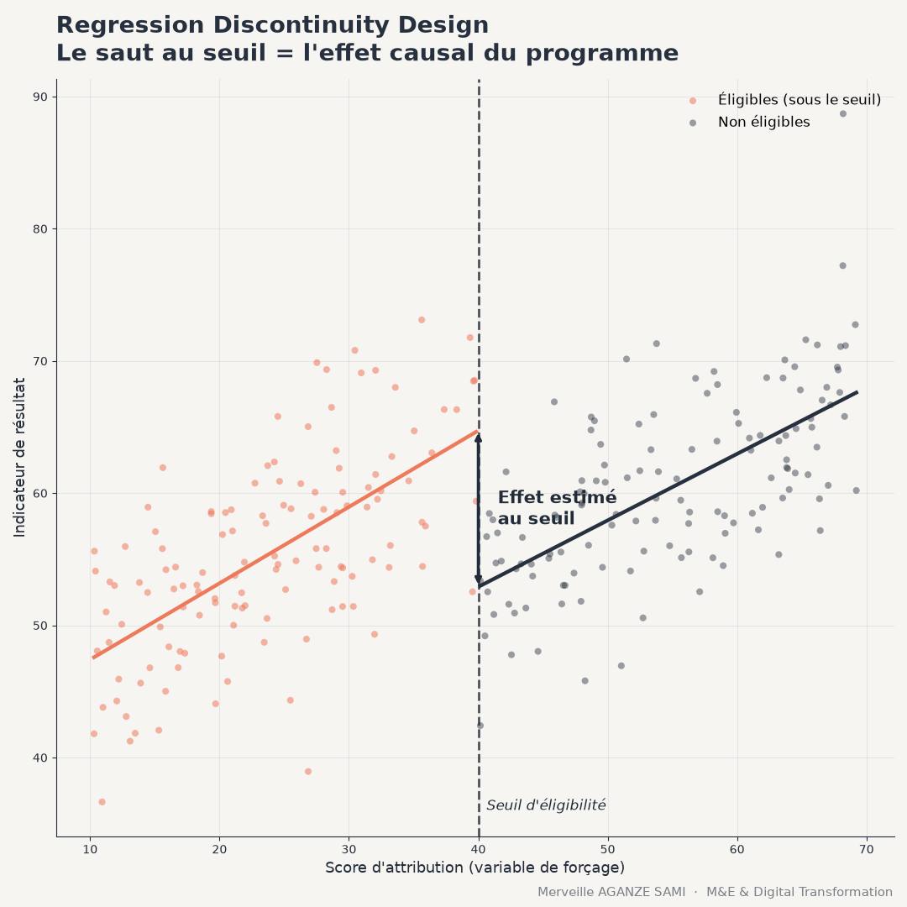

La plupart des programmes de développement attribuent leurs bénéfices selon des règles explicites : une superficie exploitée inférieure à un certain nombre d'hectares, un score de vulnérabilité en deçà d'un seuil, un revenu sous un plafond. Ces règles administratives, conçues pour des raisons de gestion, constituent une ressource méthodologique souvent inexploitée pour l'évaluation d'impact.
La comparaison directe entre bénéficiaires et non-bénéficiaires reste en effet exposée au biais de sélection : les deux groupes diffèrent généralement dès le départ, et l'écart observé mêle l'effet du programme à ces différences initiales. La régression sur discontinuité, introduite en psychologie de l'éducation par Thistlethwaite et Campbell, propose une solution qui repose entièrement sur la règle d'attribution (Thistlethwaite & Campbell, 1960).
1. Le principe : une quasi-expérience au voisinage du seuil
L'argument central est le suivant. Considérons deux ménages dont le score de vulnérabilité vaut respectivement 39 et 41, pour un seuil d'éligibilité fixé à 40. Sur l'ensemble des caractéristiques observables et inobservables, ces deux ménages sont vraisemblablement très semblables : la différence d'un ou deux points relève largement de la mesure ou du hasard. Pourtant, l'un bénéficie du programme et l'autre non.
Au voisinage immédiat du seuil, l'assignation au traitement se rapproche donc d'un tirage aléatoire. Il devient possible d'estimer l'effet du programme comme la discontinuité — le saut — de l'indicateur de résultat au point de coupure, une fois pris en compte la relation continue entre cet indicateur et la variable d'assignation (Imbens & Lemieux, 2008).
Deux variantes. Lorsque le franchissement du seuil détermine strictement l'accès au programme, on parle de RDD net (sharp). Lorsqu'il modifie seulement la probabilité d'accès — un ciblage appliqué avec des exceptions — on recourt au RDD flou (fuzzy), qui s'estime par variables instrumentales.
2. Conditions de validité
La crédibilité de l'estimation repose sur des hypothèses vérifiables, dont la plus importante est l'absence de manipulation de la variable d'assignation.
- Absence de manipulation. Si les ménages ou les agents peuvent ajuster le score déclaré pour franchir le seuil, la comparabilité locale disparaît. Le test de McCrary examine la continuité de la densité de la variable d'assignation au voisinage du seuil : une accumulation anormale d'observations juste en dessous ou juste au-dessus constitue un signal d'alerte (McCrary, 2008).
- Continuité des covariables. Les caractéristiques observées avant l'intervention ne doivent présenter aucun saut au seuil. Un test appliqué à chacune d'elles, avec la même spécification que pour l'indicateur de résultat, permet de le vérifier.
- Absence de seuil concurrent. Si une autre politique utilise la même valeur de coupure, l'effet estimé agrège les deux dispositifs et ne peut être attribué au programme étudié.
- Effectifs suffisants au voisinage. L'estimation ne mobilise que les observations proches du seuil. Un échantillon global important ne garantit pas une puissance statistique suffisante localement.
3. Choix d'estimation
Deux décisions techniques influencent fortement le résultat et doivent être justifiées.
La fenêtre d'estimation détermine quelles observations entrent dans l'analyse. Une fenêtre étroite améliore la comparabilité mais réduit la précision ; une fenêtre large produit l'effet inverse. Les procédures de sélection automatique fondées sur un critère d'erreur quadratique moyenne fournissent un point de départ documenté (Calonico et al., 2014).
La forme fonctionnelle ensuite. La pratique actuelle privilégie les ajustements polynomiaux locaux de degré faible — linéaires ou quadratiques — estimés séparément de chaque côté du seuil. Les polynômes de degré élevé sont déconseillés : ils produisent des estimations instables et des intervalles de confiance trompeurs aux bornes de l'intervalle (Gelman & Imbens, 2019).
4. Tests de robustesse
Trois vérifications complètent l'analyse principale. Le déplacement du seuil vers des valeurs fictives, où aucun effet n'est attendu, ne doit révéler aucune discontinuité significative. La variation de la fenêtre d'estimation doit produire des résultats stables en ordre de grandeur. L'exclusion des observations les plus proches du seuil permet enfin de tester la sensibilité à une éventuelle manipulation résiduelle.
5. Portée et limite
L'effet estimé par un RDD est un effet local au voisinage du seuil. Il renseigne sur ce qu'aurait produit le programme pour des unités situées à la marge de l'éligibilité — information souvent pertinente lorsqu'il s'agit d'ajuster un critère de ciblage, mais qui ne s'extrapole pas aux bénéficiaires éloignés du seuil.
Cette restriction constitue à la fois la force et la limite de la méthode. La rigueur de l'identification causale se paie par une portée réduite. Il convient donc d'énoncer explicitement, dans toute restitution, que la conclusion vaut au voisinage du point de coupure et non pour l'ensemble de la population bénéficiaire (Lee & Lemieux, 2010).
Points essentiels
- Un seuil administratif d'éligibilité crée une quasi-expérience à son voisinage
- L'effet se lit comme la discontinuité de l'indicateur au point de coupure
- Le test de McCrary vérifie l'absence de manipulation de la variable d'assignation
- Privilégier les polynômes locaux de degré faible ; éviter les degrés élevés
- L'effet estimé est local : il ne s'extrapole pas aux unités éloignées du seuil
Références
- Calonico, S., Cattaneo, M. D., & Titiunik, R. (2014). Robust Nonparametric Confidence Intervals for Regression-Discontinuity Designs. Econometrica, 82(6), 2295–2326. doi.org/10.3982/ECTA11757
- Gelman, A., & Imbens, G. (2019). Why High-Order Polynomials Should Not Be Used in Regression Discontinuity Designs. Journal of Business & Economic Statistics, 37(3), 447–456. doi.org/10.1080/07350015.2017.1366909
- Imbens, G. W., & Lemieux, T. (2008). Regression discontinuity designs: A guide to practice. Journal of Econometrics, 142(2), 615–635. doi.org/10.1016/j.jeconom.2007.05.001
- Lee, D. S., & Lemieux, T. (2010). Regression Discontinuity Designs in Economics. Journal of Economic Literature, 48(2), 281–355. doi.org/10.1257/jel.48.2.281
- McCrary, J. (2008). Manipulation of the running variable in the regression discontinuity design: A density test. Journal of Econometrics, 142(2), 698–714. doi.org/10.1016/j.jeconom.2007.05.005
- Thistlethwaite, D. L., & Campbell, D. T. (1960). Regression-discontinuity analysis: An alternative to the ex post facto experiment. Journal of Educational Psychology, 51(6), 309–317. doi.org/10.1037/h0044319

Merveille Aganze Sami
Conseillère MEL & Gestion de Bases de Données. Plus de 9 ans d'expérience en suivi-évaluation, SIG et digitalisation auprès d'organisations internationales (GIZ, Enabel) en RD Congo.
Une évaluation d'impact à concevoir sans randomisation ?
Prendre contact